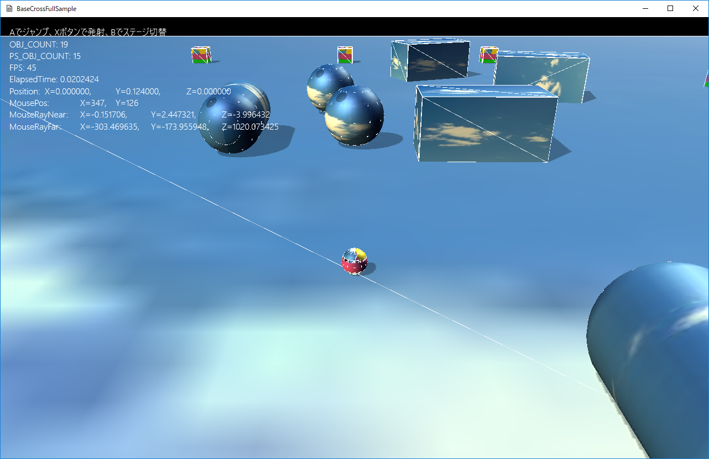

図0114a
この画面で→↓←↑キーを押すとカメラが回転します。PageUp、PageDownでカメラが寄ったり引いたりします。WASDキーはプレイヤーを動かします。Xで砲弾を発射し、Zでジャンプします。
//キーボード入力用
//ここに設定したキーボード入力を得る
vector<DWORD> UseKeyVec = { };
//キーボード入力用
//ここに設定したキーボード入力を得る
vector<DWORD> UseKeyVec = {
VK_PRIOR,VK_NEXT,VK_UP, VK_DOWN, VK_LEFT, VK_RIGHT,
VK_LBUTTON, VK_RBUTTON, VK_MBUTTON,
'W','A','S','D','X','Z'
};
void TitleStage::OnUpdate() {
//キーボード（マウス）の取得
auto KeyState = App::GetApp()->GetInputDevice().GetKeyState();
if (KeyState.m_bPressedKeyTbl[VK_RBUTTON]) {
OnRButtonEnter();
}
}
void TitleStage::OnRButtonEnter() {
PostEvent(0.0f, GetThis<ObjectInterface>(), App::GetApp()->GetScene<Scene>(), L"ToGameStage");
}
Vec3 Player::GetMoveVector() const {
Vec3 Angle(0, 0, 0);
//キーボードの取得
auto KeyState = App::GetApp()->GetInputDevice().GetKeyState();
float MoveLength = 0; //動いた時のスピード
auto PtrTransform = GetComponent<Transform>();
auto PtrCamera = OnGetDrawCamera();
//進行方向の向きを計算
Vec3 Front = PtrTransform->GetPosition() - PtrCamera->GetEye();
Front.y = 0;
Front.normalize();
//進行方向向きからの角度を算出
float FrontAngle = atan2(Front.z, Front.x);
float MoveX = 0.0f;
float MoveZ = 0.0f;
if (KeyState.m_bPushKeyTbl['W']) {
//前
MoveZ = 1.0f;
}
else if (KeyState.m_bPushKeyTbl['A']) {
//左
MoveX = -1.0f;
}
else if (KeyState.m_bPushKeyTbl['S']) {
//後ろ
MoveZ = -1.0f;
}
else if (KeyState.m_bPushKeyTbl['D']) {
//右
MoveX = 1.0f;
}
if (MoveX == 0.0f && MoveZ == 0.0f) {
return Angle;
}
float KeyAngle = atan2(-MoveX, MoveZ);
//トータルの角度を算出
float TotalAngle = FrontAngle + KeyAngle;
//角度からベクトルを作成
Angle = Vec3(cos(TotalAngle), 0, sin(TotalAngle));
//正規化する
Angle.normalize();
//Y軸は変化させない
Angle.y = 0;
return Angle;
}
void Player::OnUpdate() {
auto Vec = GetMoveVector();
auto PtrPs = GetComponent<PsSphereBody>();
auto Velo = PtrPs->GetLinearVelocity();
Velo.x = Vec.x * 5.0f;
Velo.z = Vec.z * 5.0f;
PtrPs->SetLinearVelocity(Velo);
//キーボードの取得
auto KeyState = App::GetApp()->GetInputDevice().GetKeyState();
if (KeyState.m_bPressedKeyTbl['X']) {
OnPushX();
}
else if (KeyState.m_bPressedKeyTbl['Z']) {
OnPushA();
}
}
void GameStage::GetMouseRay(Vec3& Near, Vec3& Far) {
Mat4x4 world, view, proj;
world.affineTransformation(
Vec3(1.0f, 1.0f, 1.0f),
Vec3(0.0f, 0.0f, 0.0f),
Vec3(0.0f, 0.0f, 0.0f),
Vec3(0.0f, 0.0f, 0.0f)
);
auto PtrCamera = GetView()->GetTargetCamera();
view = PtrCamera->GetViewMatrix();
proj = PtrCamera->GetProjMatrix();
auto viewport = GetView()->GetTargetViewport();
Near = XMVector3Unproject(
Vec3((float)m_MousePoint.x, (float)m_MousePoint.y, 0),
viewport.TopLeftX,
viewport.TopLeftY,
viewport.Width,
viewport.Height,
viewport.MinDepth,
viewport.MaxDepth,
proj,
view,
world);
Far = XMVector3Unproject(
Vec3((float)m_MousePoint.x, (float)m_MousePoint.y, 1.0),
viewport.TopLeftX,
viewport.TopLeftY,
viewport.Width,
viewport.Height,
viewport.MinDepth,
viewport.MaxDepth,
proj,
view,
world);
}
Vec3((float)m_MousePoint.x, (float)m_MousePoint.y, 0)
Vec3((float)m_MousePoint.x, (float)m_MousePoint.y, 1.0)
//マウスの左ボタン押した瞬間
void GameStage::OnLButtonEnter() {
SelectClear();
auto PtrCamera = GetView()->GetTargetCamera();
Vec3 Eye = PtrCamera->GetEye();
vector<shared_ptr<ActivePsObject>> ObjVec;
Vec3 NearPos, FarPos;
GetMouseRay(NearPos, FarPos);
for (auto& v : GetGameObjectVec()) {
auto PsPtr = dynamic_pointer_cast<ActivePsObject>(v);
if (PsPtr) {
auto ColObb = PsPtr->GetComponent<CollisionObb>(false);
auto ColSp = PsPtr->GetComponent<CollisionSphere>(false);
auto ColCapsule = PsPtr->GetComponent<CollisionCapsule>(false);
if (ColObb) {
auto Obb = ColObb->GetObb();
if (HitTest::SEGMENT_OBB(NearPos, FarPos, Obb)) {
ObjVec.push_back(PsPtr);
}
}
else if (ColSp) {
auto Sp = ColSp->GetSphere();
if (HitTest::SEGMENT_SPHERE(NearPos, FarPos, Sp)) {
ObjVec.push_back(PsPtr);
}
}
else if (ColCapsule) {
auto Cap = ColCapsule->GetCapsule();
if (HitTest::SEGMENT_CAPSULE(NearPos, FarPos, Cap)) {
ObjVec.push_back(PsPtr);
}
}
}
}
if (ObjVec.size() > 0) {
float MinSpan = 1000.0f;
shared_ptr<ActivePsObject> SelectObj = nullptr;
for (auto& v : ObjVec) {
float Span = length(v->GetComponent<Transform>()->GetPosition() - Eye);
if (Span < MinSpan) {
MinSpan = Span;
SelectObj = v;
}
}
if (SelectObj) {
SelectObj->SetSelected(true);
}
}
}
void ActivePsObject::OnUpdate() {
if (!IsSelected()) {
return;
}
Vec3 Near, Far;
GetTypeStage<GameStage>()->GetMouseRay(Near, Far);
auto PsPtr = GetDynamicComponent<PsBodyComponent>(false);
if (PsPtr) {
auto PsPos = PsPtr->GetPosition();
float t;
Vec3 RayPos;
//現在位置と一番近いレイ上の点を得る
HitTest::ClosetPtPointSegment(PsPos,Near,Far,t, RayPos);
Vec3 ToVec = RayPos - PsPos;
ToVec *= 2.0f;
PsPtr->WakeUp();
PsPtr->SetLinearVelocity(ToVec);
}
}